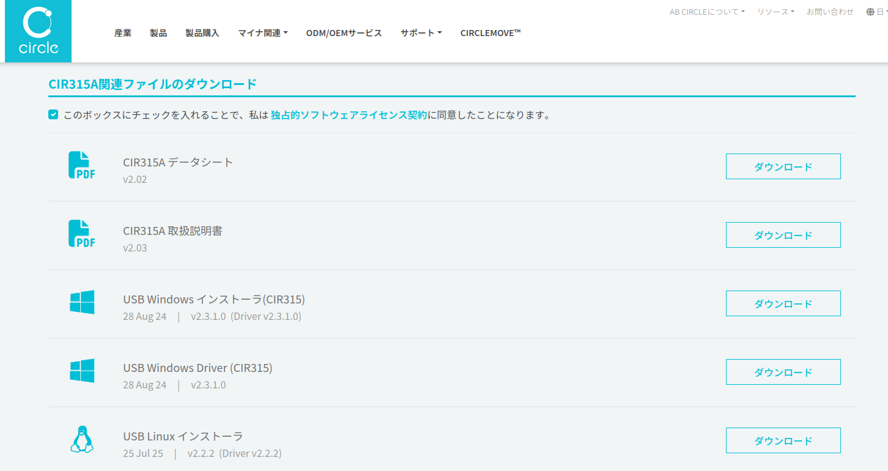
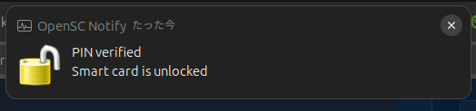

Linux で個人番号カードを読む

自宅の Ubuntu 機に IC カードリーダーを接続し，個人番号カードの内容を読み取る。
事前準備
今回は IO DATA の非接触式 IC カードリーダー USB-NFC4 を使用する。
昨年の夏頃に Amazon で安売りしてたのを買ったのだが，そのまま放置していた。 いざ確定申告で使おうとしたら Windows 機で認識できなくて使えなかった。 そのまま捨て置くのはもったいないので Linux で使えるか試そうという話である。
Ubuntu 側で必要なのは以下のソフトウェア
- OpenSC/OpenSC: Open source smart card tools and middleware. PKCS#11/MiniDriver
- デバイスドライバ : CIR315A 用のドライバで代用
- jpki/myna: マイナンバーカード・ユーティリティ・JPKI署名ツール · GitHub
では早速はじめよう。
インストール
Wiki によると Linux 版の OpenSC は自前でビルドしろとあるが， Ubuntu であればバイナリが提供されているっぽいのでそちらを使う。
$ sudo aptitude install opensc opensc-pkcs11 pcscd pcsc-tools libpcsclite1 libusb-1.0-0 libpcsclite-dev libusb-1.0-0-dev
libpcsclite1 は、要求されたバージョン (2.3.3-1) で既にインストールされています
libusb-1.0-0 は、要求されたバージョン (2:1.0.29-2) で既にインストールされています
libpcsclite1 は、要求されたバージョン (2.3.3-1) で既にインストールされています
libusb-1.0-0 は、要求されたバージョン (2:1.0.29-2) で既にインストールされています
以下の新規パッケージがインストールされます:
libccid{a} libeac3{a} libintl-perl{a} libintl-xs-perl{a} libpcsc-perl{a} libpcsclite-dev libusb-1.0-0-dev libusb-1.0-doc{a} opensc
opensc-pkcs11 pcsc-tools pcscd
更新: 0 個、新規インストール: 12 個、削除: 0 個、保留: 0 個。
アーカイブの 2,824 kB を取得する必要があります。展開後に 12.8 MB のディスク領域が新たに消費されます。
先に進みますか? [Y/n/?]
起動確認だけしておく。
$ opensc-tool -i
OpenSC 0.26.1 [gcc 15.2.0]
Enabled features: locking zlib readline openssl pcsc(libpcsclite.so.1)
問題はなさそうかな1。
CIR315A の製品ページから「USB Linux インストーラ」をダウンロードする。

ダウンロードしたファイルの内容は以下の通り：
Circle_USB_Linux_Installer_v2.2.2_(driver_v.2.2.2).zip(2025-07-25 時点)Generic-Debianlibabcccid_2.2.2-1_amd64.deb
この libabcccid_2.2.2-1_amd64.deb をインストールする。
$ sudo dpkg -i libabcccid_2.2.2-1_amd64.deb
myna は GitHub のリリースページからバイナリをダウンロードしてインストールする。
myna-v0.6.4-x86_64-unknown-linux-gnu.zip(2026-03-12 時点)myna
ファイル myna を PATH の通ってるディレクトリに置く。
こちらも起動確認だけしておこう。
$ myna help
Usage: myna [OPTIONS] <COMMAND>
Commands:
text 券面入力補助AP
visual 券面確認AP
test Test card reader
jpki 公的個人認証
pin Pin operation
unknown 謎のAP
help Print this message or the help of the given subcommand(s)
Options:
-v...
-d, --debug
-h, --help Print help
-V, --version Print version
個人番号カードを読み込む
まずは USB-NFC4 を繋いだだけの状態で IC カードリーダーが認識されているか確認する。
$ opensc-tool -l
# Detected readers (pcsc)
Nr. Card Features Name
0 No Circle CIR315 CL [CIR315 CL] (137K231232M2) 00 00
USB-NFC4 から「ピッ！」って音がする。 やっと認識してくれたよ。
ではカードリーダーに個人番号カードを乗っけてみる。
$ opensc-tool -l
# Detected readers (pcsc)
Nr. Card Features Name
0 Yes Circle CIR315 CL [CIR315 CL] (137K231232M2) 00 00
Card 項目が Yes になっている。 よしよし。
次に PIN 情報を取得する。
$ pkcs15-tool --list-pins
Using reader with a card: Circle CIR315 CL [CIR315 CL] (137K231232M2) 00 00
PIN [User Authentication PIN]
Object Flags : [0x12], modifiable
ID : 01
Flags : [0x12], local, initialized
Length : min_len:4, max_len:4, stored_len:0
Pad char : 0x00
Reference : 1 (0x01)
Type : ascii-numeric
Tries left : 3
PIN [Digital Signature PIN]
Object Flags : [0x12], modifiable
ID : 02
Flags : [0x12], local, initialized
Length : min_len:6, max_len:16, stored_len:0
Pad char : 0x00
Reference : 2 (0x02)
Type : ascii-numeric
Tries left : 5
鍵は取り出せるかな。
$ pkcs15-tool --read-certificate 1
Using reader with a card: Circle CIR315 CL [CIR315 CL] (137K231232M2) 00 00
-----BEGIN CERTIFICATE-----
...
-----END CERTIFICATE-----
ありゃ。 暗証番号がなくてもいいのか。 でもちゃんと取り出せてるみたい。
もういっちょ。
$ pkcs15-tool --read-certificate 2 --verify-pin --auth-id 02
Using reader with a card: Circle CIR315 CL [CIR315 CL] (137K231232M2) 00 00
Please enter PIN [Digital Signature PIN]:
-----BEGIN CERTIFICATE-----
...
-----END CERTIFICATE-----
こちらもちゃんと取り出せてるようだな。
“Please enter PIN” には署名用パスワードを入力する2。 正しく入力すると以下のポップアップが出る。

{kind=link}
myna のほうも動かしてみよう。
$ myna pin status
券面入力補助AP 暗証番号: 3
券面入力補助AP 暗証番号A: 10
券面入力補助AP 暗証番号B: 10
券面確認AP 暗証番号A: 10
券面確認AP 暗証番号B: 10
JPKIユーザー認証用 暗証番号: 3
JPKIデジタル署名用 パスワード: 5
これでパスワード入力を失敗できる（ロックアウトされまでの）残り回数が分かる。
券面情報を取得してみよう。
$ myna text attrs
暗証番号(4桁): ****
氏名 : **********
住所 : **********
生年月日: ********
性別 : *
実際にはちゃんと内容が表示されるが，ここでは伏せ字にしている。 あしからず。 暗証番号には券面事項入力補助用パスワードを入力する。
myna を使えば PDF ドキュメントなどに電子署名を付与できる。 こんな感じらしい。
$ myna jpki pdf sign input.pdf -o signed.pdf
署名の検証は以下の通り。
$ myna jpki pdf verify signed.pdf
「JPKI署名用証明書は4属性(氏名・住所・生年月日・性別)を含みますので注意してください」とあるので，実際に運用する場合はホンマにご注意を。
さらに「MPA for Linux」を使えば Linux のブラウザでマイナポータルや e-Tax などのサイトに個人番号カードを使ってログインできるようだ。 ただし（今のところ） Rust のビルド環境が必要なのとブラウザ拡張を無理やり入れるみたいな操作が必要らしいので，今回は割愛する。 またどこかで試そうか。
今回はここまで。 次回へ続く。
ブックマーク
参考

- スーパーユーザーなら知っておくべきLinuxシステムの仕組み
- Brian Ward (著), 柴田 芳樹 (翻訳)
- インプレス 2022-03-08 (Release 2022-03-08)
- 単行本（ソフトカバー）
- 4295013498 (ASIN), 9784295013495 (EAN), 4295013498 (ISBN)
- 評価
版元で PDF 版が買える。セキュリティ・エリアにも持ち込めるよう紙の本を買ったのだが，オンライン読書会が始まったので PDF 版も購入。Linux システムの扱い方に関するリファレンス本として優れている。最初に軽く流し読みして，必要に応じて該当項目を拾い読みしていけばいいだろう。